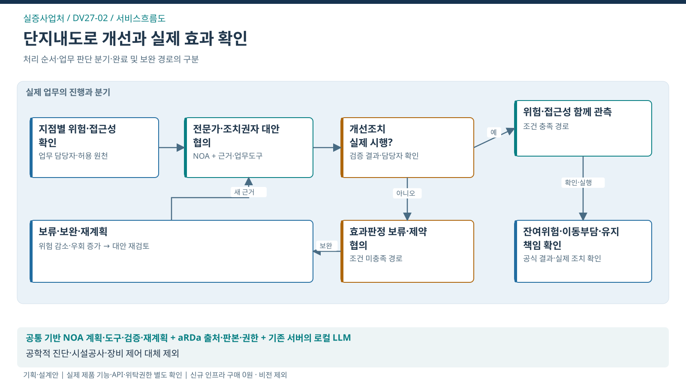

실증사업처 / SERVICE FLOW
단지내도로 개선의 실행·효과 확인
도로진단 권고의 실제 이행과 보행위험·접근성 개선 확인

처리의 대상
지점·위험상황·개선조치·후속 관측
업무 전환
현장 조건별 확인질문·대안·실행 제약·후속 관측을 연결하고 예상과 다른 효과가 나오면 대책을 수정
완료의 기준
실제 조치·후속관측·잔여위험과 유지관리 책임이 연결됨
이 서비스의 법정업무 기반
실증사업처와 연결된 업무
법적 수행범위에서 출발하는 AX 제안
연결은 소관·예산권의 확정과 구분
- 교통시설 진단평가·특별실태조사 ↗법정 위탁
- 단지내도로 교통안전 실태점검 ↗위탁 가능 · 개별 고시 필요
- 모빌리티 기반시설 대책 검토 ↗승인권자의 자문·검토 요청
문제 근거와 기대편익
업무 근거: TS 공개업무 안내
해결할 문제 가설: 권고안이나 시설 설치 완료만으로 실제 위험 감소를 확정할 수 없다. 접근 제한으로 보행량만 감소했을 가능성도 확인해야 함
수혜자: 단지·대학 등의 보행자·교통약자
기대효과: 기관 — 진단 권고의 실행·효과 근거 확보 / 보행자 — 위험노출과 불필요한 우회·이동 부담 완화
확인 지표: 노출량 대비 위험상황 / 이동·우회 부담 / 실제 조치 이행
기준값·목표 개선율: 현업 실증으로 확정
전문가 역할·제외범위·검증조건
전문 판단·실행: 안전 전문가의 현장 진단과 시설 관리주체의 실제 개선
이번 과업 제외: 사진/영상 판독, 공학적 안전진단 대체, 시설 자동제어, 토목공사비의 SW비 편입
선행 확인: 한 시범지점·실행 협약·시설 조치재원·구조화 관측·전문검증
제품 역할은 적용안. TS 설치·성능·현업 효과의 검증 완료와 구분.